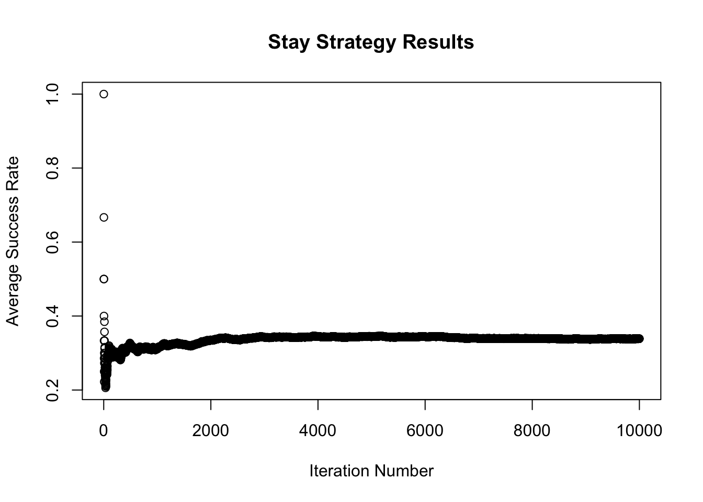
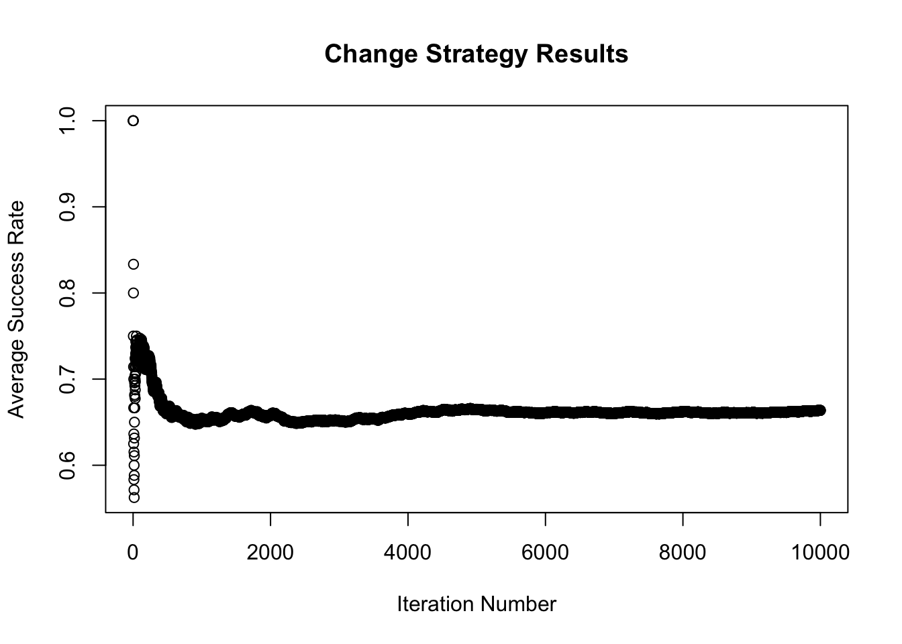
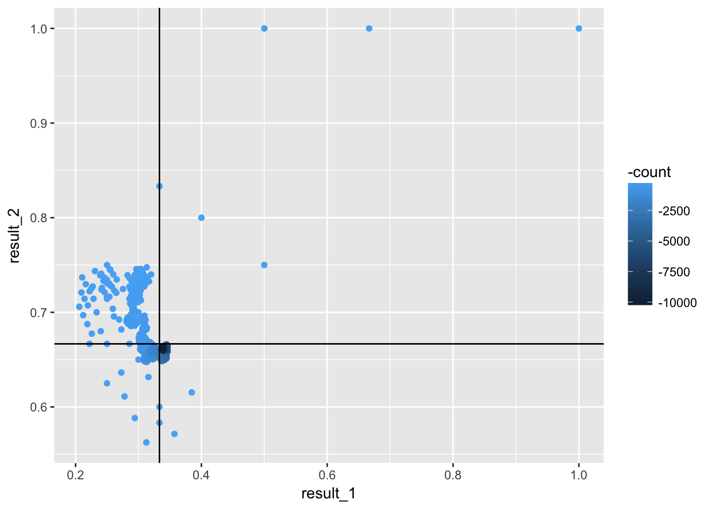

My colleague has an affinity for the Monty Hall problem because it illustrates conditional probabilities. To illustrate the point to someone who did not believe that one should change doors, I simulated the two decisions. For background on the Monty Hall Problem, check out this Wikipedia article: https://en.wikipedia.org/wiki/Monty_Hall_problem
library(ggplot2)
n <- 10000
stay_score <- 0
# guess the first door every time
guess <- 1
result_1 <- vector("numeric", length = n)
prizes <- c("car", "goat", "goat")
for( i in 1:n) {
x <- ifelse(sample(prizes)[guess]=="car", 1, 0)
stay_score <- stay_score+x
result_1[i] <- stay_score/i
}
# print(tactic1/n)
change_score <- 0
result_2 <- vector("numeric", length = n)
for( i in 1:n) {
guess <- 1
# guess the first door every time
prizes <- sample(c("car", "goat", "goat"))
#if the car is behind door number two, open door number three, otherwise open door number two
ifelse(prizes[2] == "car",prizes <- prizes[-3], prizes <- prizes[-2])
guess <- guess+1
y <- ifelse(prizes[guess]=="car",1,0)
change_score <- change_score + y
result_2[i] <- change_score/i
}
df <- as.data.frame(cbind(result_1, result_2))
df$count <- 1:nrow(df)Using the base plot function, you can quickly see how the average scores stabilize over each iteration.
plot(result_1, main = "Stay Strategy Results", xlab ="Iteration Number", ylab = "Average Success Rate")
plot(result_2, main = "Change Strategy Results", xlab ="Iteration Number", ylab = "Average Success Rate")
By repeatedly simulating, we can see how long it will take for the average to reach 1/3 for the first strategy and 2/3 for the “change” strategy. The black lines indicate the theoretical value, and the blue dots darken by iteration. After 10,000 iterations, the average value for both strategies are pretty close to what they should theoretically reach.
ggplot(df, aes(x = result_1, y = result_2)) +geom_point(aes(color= -count)) +geom_vline(xintercept = 1/3) +geom_hline(yintercept = 2/3)